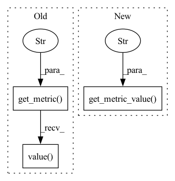

Pattern ID :18747

Before Change
measurement.get_metric("perf_server_queue").value(),
measurement.get_metric(
"perf_server_compute_input").value(),
measurement.get_metric(
"perf_server_compute_infer").value(),
measurement.get_metric("perf_throughput").value(),
measurement.get_metric("cpu_used_ram").value()
]
After Change
measurement.get_metric_value("perf_latency"),
measurement.get_metric_value("perf_client_response_wait"),
measurement.get_metric_value("perf_server_queue"),
measurement.get_metric_value("perf_server_compute_input"),
measurement.get_metric_value("perf_server_compute_infer"),
measurement.get_metric_value("perf_throughput"),
measurement.get_metric_value("cpu_used_ram"),
In pattern: SUPERPATTERN
Frequency: 3
Non-data size: 3
Instances
Fragment ID: 60971426
Project Name: triton-inference-server/model_analyzer
Commit Name: 112b84cf247722c2963bd1675c51fe4ce08385a9
Time: 2021-08-10
Author: 18255193+kthui@users.noreply.github.com
File Name: model_analyzer/reports/report_manager.py
M Class Name: ReportManager
N Class Name: ReportManager
M Method Name: _build_detailed_table(2)
N Method Name: _build_detailed_table(2)
M Parent Class:
N Parent Class:
M File Name: model_analyzer/reports/report_manager.py
N File Name: model_analyzer/reports/report_manager.py
M Start Line: 520
M End Line: 554
N Start Line: 516
N End Line: 540
'>
Before Change
model_config.get_field("name"),
model_config.dynamic_batching_string(), instance_group_str,
measurement.get_metric("perf_latency").value(),
measurement.get_metric("perf_throughput").value(),
measurement.get_metric("cpu_used_ram").value()
]
summary_table.insert_row_by_index(row)
After Change
measurement.get_metric_value("perf_throughput"),
measurement.get_metric_value("cpu_used_ram"),
measurement.get_metric_value("gpu_used_memory"),
round(measurement.get_metric_value("gpu_utilization"), 1)
]
summary_table.insert_row_by_index(row)
else:
'>
Fragment ID: 60971435
Project Name: triton-inference-server/model_analyzer
Commit Name: 112b84cf247722c2963bd1675c51fe4ce08385a9
Time: 2021-08-10
Author: 18255193+kthui@users.noreply.github.com
File Name: model_analyzer/reports/report_manager.py
M Class Name: ReportManager
N Class Name: ReportManager
M Method Name: _build_summary_table(5)
N Method Name: _build_summary_table(5)
M Parent Class:
N Parent Class:
M File Name: model_analyzer/reports/report_manager.py
N File Name: model_analyzer/reports/report_manager.py
M Start Line: 459
M End Line: 482
N Start Line: 456
N End Line: 478
'>
Before Change
self._model_config_parameters["dynamic_batching"] *= 2
def _get_throughput(self, measurement):
return measurement.get_metric("perf_throughput").value()
def _calculate_throughput_gain(self, index):
throughput_before = self._get_throughput(
self._measurements[-(index + 1)])
After Change
self._model_config_parameters["dynamic_batching"] *= 2
def _get_throughput(self, measurement):
return measurement.get_metric_value("perf_throughput")
def _calculate_throughput_gain(self, index):
throughput_before = self._get_throughput(
self._measurements[-(index + 1)])
'>
Fragment ID: 60971385
Project Name: triton-inference-server/model_analyzer
Commit Name: 112b84cf247722c2963bd1675c51fe4ce08385a9
Time: 2021-08-10
Author: 18255193+kthui@users.noreply.github.com
File Name: model_analyzer/config/run/run_search.py
M Class Name: RunSearch
N Class Name: RunSearch
M Method Name: _get_throughput(2)
N Method Name: _get_throughput(2)
M Parent Class:
N Parent Class:
M File Name: model_analyzer/config/run/run_search.py
N File Name: model_analyzer/config/run/run_search.py
M Start Line: 111
M End Line: 111
N Start Line: 108
N End Line: 108